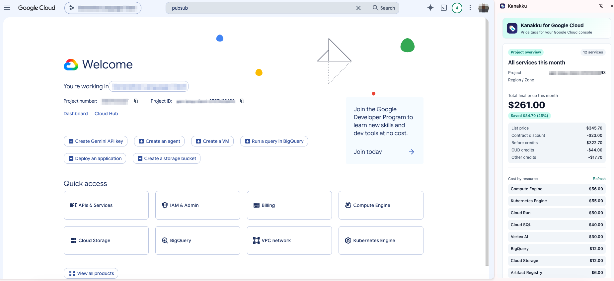
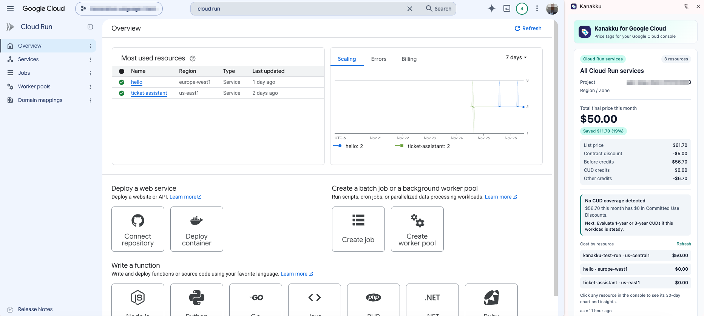

Kanakku for Google Cloud
Price tags for your Google Cloud console — see resource costs, CUD savings, 30-day trends, and waste alerts right inside Chrome's side panel.
What Kanakku Does
-
Reads only the active
console.cloud.google.comURL to identify the project, service, or resource (never scrapes page DOM content). -
Queries your own BigQuery Cloud Billing daily summary table
(
daily_resource_costs) directly from your browser using read-only OAuth (bigquery.readonly). - Displays Final price, List price, Contract discounts, CUD credits, Other credits, 30-day trend, burn rate, and Action Required alerts.
Screenshots

